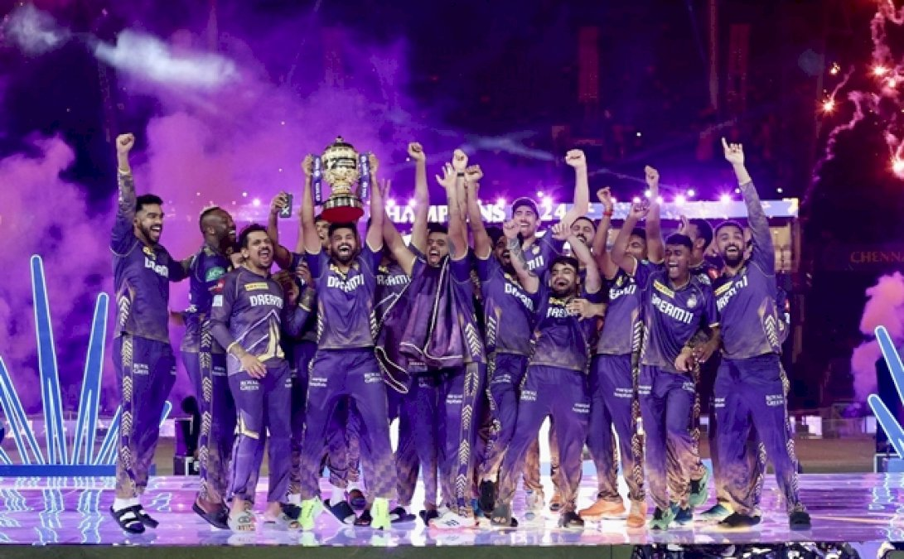

|  |
Full Name: Kolkata Knight RidersCaptain: Shreyas IyerCoach: Chandrakant PanditHome Ground: Eden Gardens, KolkataIPL Titles: 3Manager: Venky Mysore |
|---|
Kolkata Knight Riders (KKR) is a franchise cricket team based in Kolkata, West Bengal, India. The team was founded in 2008 and is one of the original eight teams that participated in the inaugural season of the Indian Premier League (IPL). KKR is co-owned by Bollywood actor Shah Rukh Khan, actress Juhi Chawla, and her spouse Jay Mehta. KKR has won the IPL championship twice, in 2012 and 2014, under the captaincy of Gautam Gambhir. The team is known for its strong batting lineup, which has featured some of the biggest names in cricket, including Andre Russell, Sunil Narine, and Dinesh Karthik. The team's home ground is the iconic Eden Gardens in Kolkata, which is known for its passionate cricket fans and electrifying atmosphere. KKR has a dedicated fan base, often referred to as the "Knight Riders," and is known for its vibrant team colors of purple and gold. The team has also been involved in various charitable initiatives and community outreach programs.
BACK